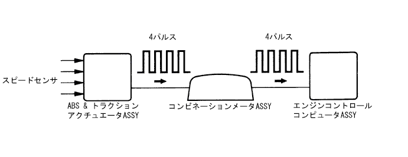
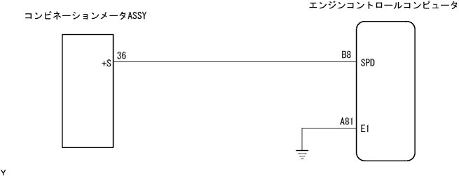

DTC P0500/42 Vehicle Speed Sensor Circuit |

| DTC No. SAE/TCCS | DTC Detection Condition
| Inspection Area |
|---|---|---|
| P0500/42 |
|
|

| Step 1 | Read TaSCAN Data (Vehicle Speed) |
Check that the speedometer operates normally.
Connect SST (TaSCAN) to DLC3.
Perform a road test of the vehicle.
Following the SST (TaSCAN) screen display, read the Data List item [Vehicle Speed] from [ECU Data Monitor].
|
| ||||
| OK | ||
| ||